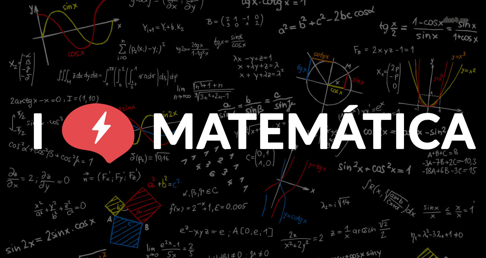
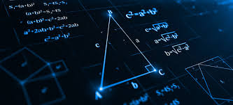
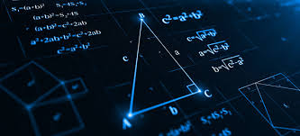

Matemática
Aula ministrada pelo Professor Doutor Evanivaldo Castro Silva Jr, nessa matéria aprendemos os fundamentos da matemática elementar, sendo o primeiro deles teoria dos conjuntos.
As definições de conjuntos podem ser uma lista ou grupo de dados bem definidos com alguma especificidade entre si, como também coleção de objetos com alguma característica comum.
O próximo tema abordado foi operações com frações. No princípio aprendemos o MMC (mínimo múltiplo comum) que representa o número que satisfaz a condição de ser o menor múltiplo entre uma lista de números dados. Na adição e subtração fazemos o MMC dos denominadores serem iguais e depois e os numeradores são obtidos dividindo-se o novo denominador (mmc) pelo antigo e multiplicando esse resultado pelos numeradores anteriores somando o resultado.
Depois vimos regra de três simples e composta. Aproveitando essa propriedade das proporções podemos perceber que se conhecermos quaisquer 3 dos 4 valores de uma proporção podemos calcular o quarto, isto é, o valor restante. Assim a Regra de Três procura estabelecer a relação de proporção (direta ou inversa) entre as grandezas de modo a se descobrir um dado valor desconhecido. A principal diferença entre a regra de três simples e a composta é que na simples considera-se apenas as informações de duas grandezas enquanto que na composta são mais de duas.
As porcentagens são amplamente utilizadas nos cálculos financeiros. O parâmetro universal de comparação entre as partes e o todo utilizado é a porcentagem Essa universalização também, e principalmente, é utilizada nos sistemas de TI (Tecnologia da Informação).
 
